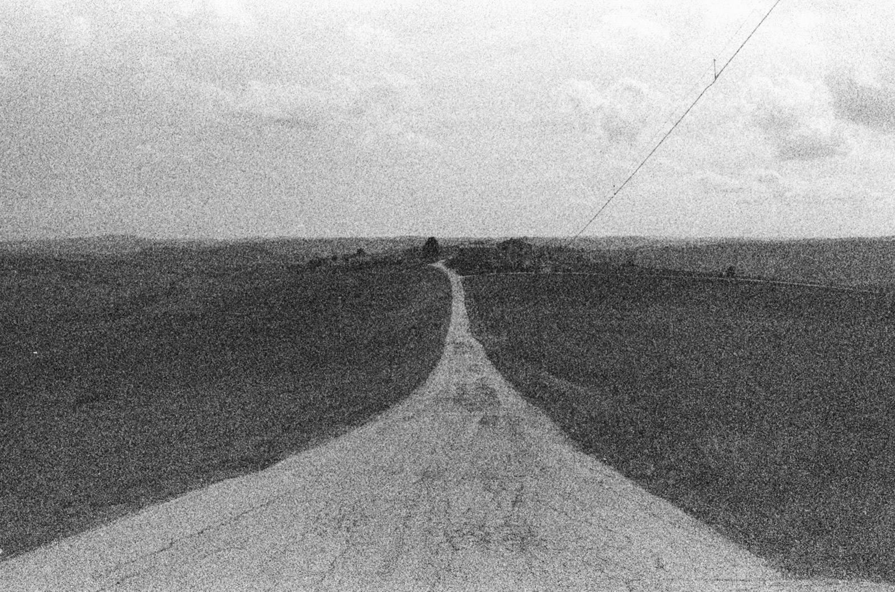
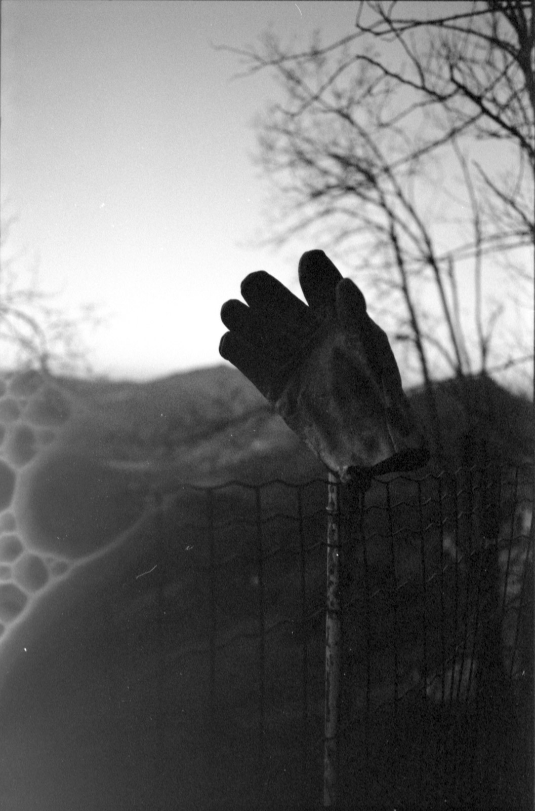
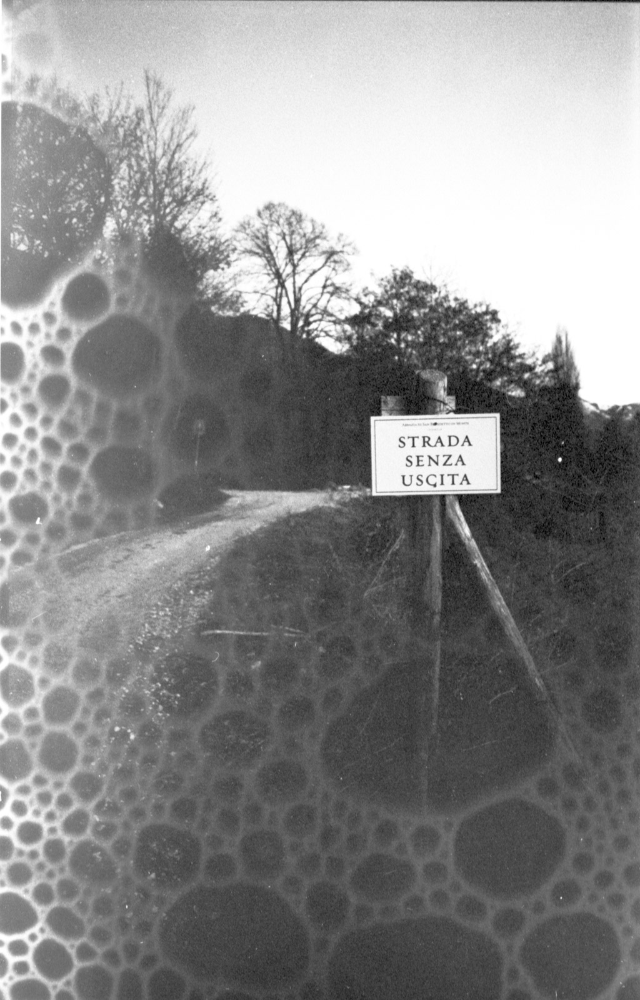

Upon waking, there is an instant in which the mind has not yet returned to the world, yet the dream has already begun to disappear. Forgetting Dreams explores that fragile interval: a psychological afterimage in which meaning collapses, sensation remains, and memory tries to reconstruct what has been lost.
The series draws from my early fascination with lucid dreaming and the idea that a secondary life unfolds behind closed eyes. At the time, what intrigued me was not only the attempt to have control on dreams, but mostly the feeling of waking with traces of another reality, a place that felt lived yet irretrievable. This project is a visual attempt to inhabit that liminal terrain.
Forgetting Dreams treats 35mm b/w film as the material parallel to the unconscious - unstable, intuitive, imperfect, and physical. It holds on to what is slipping away, not to preserve it, but to honor the impossibility of returning to it.